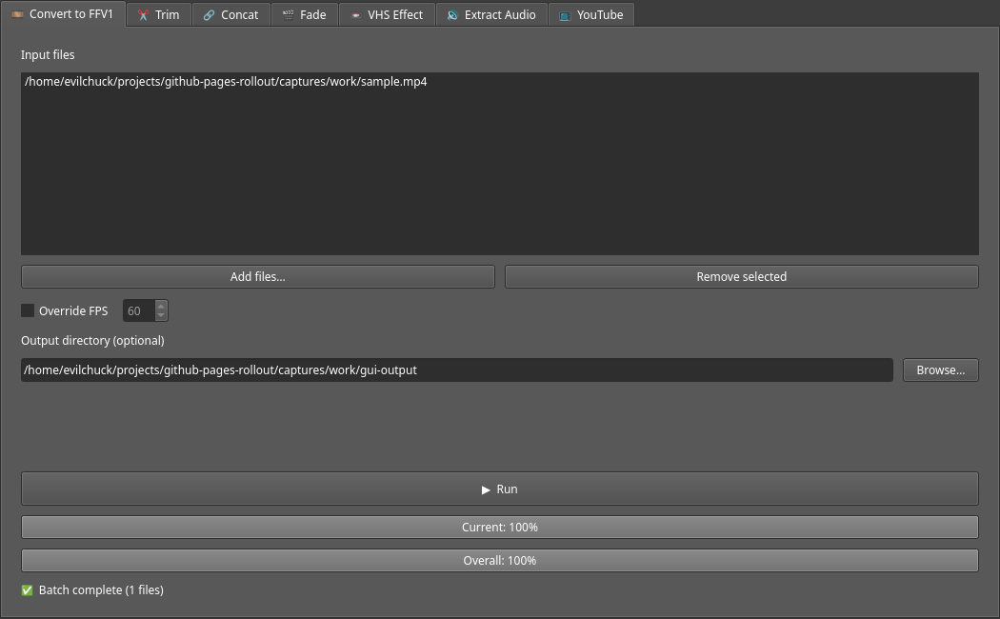
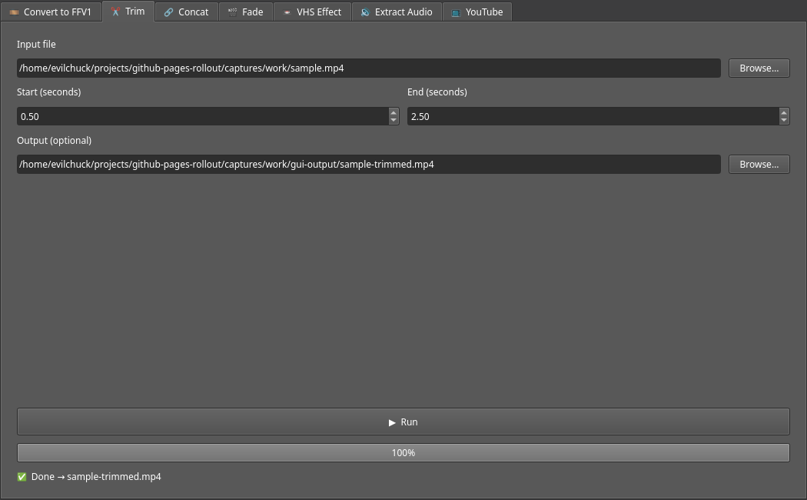
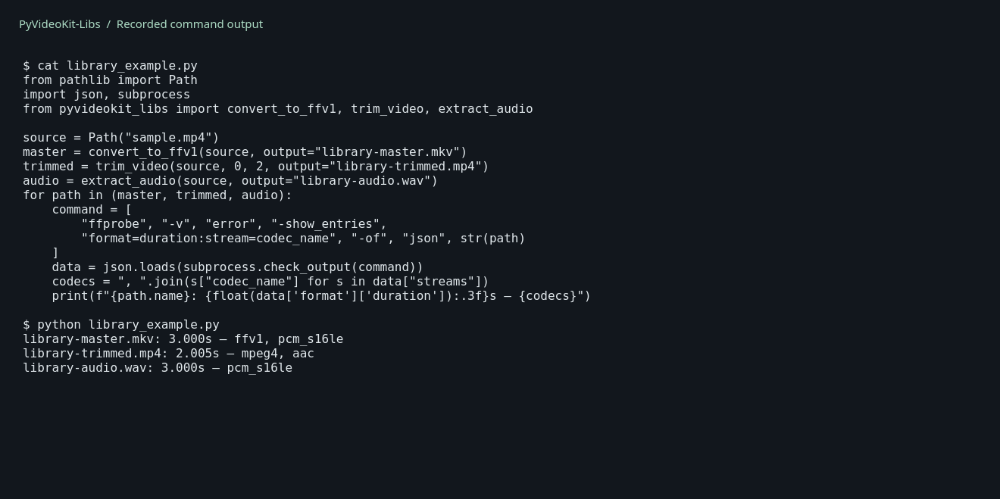

Work with your footage
Trim, concatenate, fade, extract WAV audio or apply a VHS effect.
Video toolkit / Evilchuck666
FFmpeg-based video tools as a Python library, a command line and a desktop app. Install the whole PyVideoKit family in one go.
Python · FFmpeg · SoX · Linux / Windows / macOS
In use: desktop app, command line and Python library




Trim, concatenate, fade, extract WAV audio or apply a VHS effect.
Create lossless FFV1 masters and 4K ProRes 422 HQ exports for YouTube.
Write Python, use the pvk command, or work in the PySide6 desktop interface.
Get started
Install the meta-package to get the library, the command line and the desktop app in one go. FFmpeg, FFprobe and SoX must be in your PATH (on Arch-based distributions, the AUR package installs them for you).
SHA-256 checksums ↓ · Latest release & all downloads (incl. source .tar.gz) ↗
PyVideoKit is in the AUR ↗; FFmpeg and SoX are installed as dependencies.
yay -S python-pyvideokit
# or: paru -S python-pyvideokitpip install PyVideoKit
pvk --help
pvk-gui